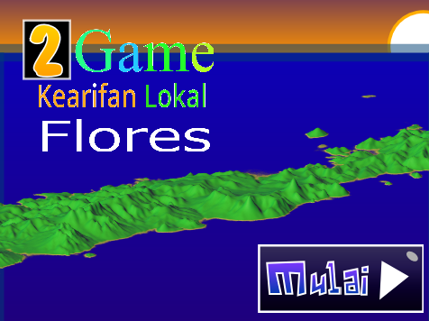
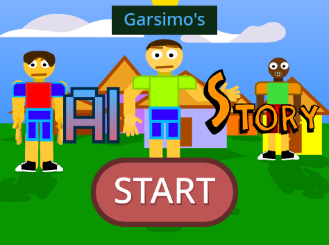
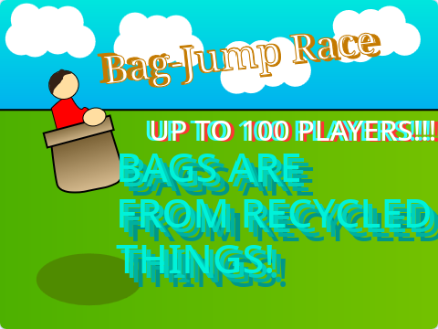

2 Game Kearifan Lokal Flores
"2 Game Kearifan Lokal Flores" is a game consists of 2 minigames
that simulate traditional activity:
-
Bubu
A technique on how to make a fish trap on a sustainable way
-
Rangku Alu
A traditional game where the player jump over the grid of obstacles

Garsimo's AI Story
"Garsimo's AI Story is a story game made for IKCC Competition 2024
about Garsimo learning and educating AI to other people.
(and I got rank #7)

Bag Race Competition
"Bag Race Competition is an offline multiplayer
sharescreen game where each player jumps while
using a bag to reach the line of victory.
Other Games?
Yes! there are some other old games you can try.
The button below will lead to my Scratch Projects.